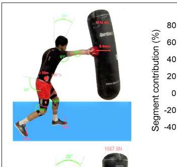
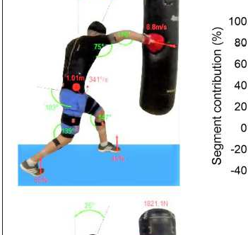

MOTEUR CINÉMATIQUE SÉQUENTIEL 3D
Modélisation spatiale tridimensionnelle, chaîne cinétique fermée, vecteurs de réaction au sol (GRF) et HUD Votre EPS.
👁️ CALQUES DU HUD BIOMÉCANIQUE
📊 TÉLÉMÉTRIE D'IMPACT
Phase 5 (Impact & Cocontraction) : Synchronisation des agonistes et antagonistes du membre frappeur créant une raideur quasi-instantanée (Δt ≈ 18 ms) qui solidarise la masse corporelle effective (m_eff = 32.4 kg) pour maximiser le transfert d'impulsion.
SIMULATEUR DE DUEL TACTIQUE (COMBATTANT A vs COMBATTANT B)
Sélectionnez librement deux techniques pour calculer l'interaction cinétique, les failles exploitées et l'avantage décisionnel.
🔴 COMBATTANT A (Attaquant Principal)
INITIATIVE🔵 COMBATTANT B (Riposte / Contre)
RÉACTION⚡ RÉSULTAT DE L'INTERACTION CINÉTIQUE & AVANTAGE DÉCISIONNEL
RECHERCHE SCIENTIFIQUE INSEP REVEA (Dr Daniel Dinu)
Reconstitution cinématique 3D par 17 centrales inertielles UMI Xsens (240 Hz), données sEMG et modélisation de raideur articulaire.

Force maximale de 3 158 N chez l'expert. Angle coude optimal 112.9°. Verrouillage terminal cocontracté.

Couple de rotation du tronc à forte accélération centripète. Fixation scapulaire du grand dorsal et pectoral.

Impulsion verticale ascendante combinée à une extension d'épaule et de hanche. Transfert direct de la cuisse arrière.


Comparaison clinique des profils de force d'impact : les élites génèrent 3x plus d'énergie grâce à un meilleur transfert GRF.

BIOMÉCANIQUE DU KICKBOXING (ANALYSE VOTRE EPS)
Modélisation de la masse effective (m_eff), chaînes cinétiques ouvertes/fermées et prévention des ruptures du LCA.

⚡ LE CONCEPT DE MASSE EFFECTIVE (m_eff ≈ 32 kg)
Lors d'un coup de pied ou de poing, un membre isolé ne pèse que quelques kilogrammes. C'est la cocontraction isométrique terminale (agonistes + antagonistes) survenant 18 à 20 ms avant l'impact qui verrouille le corps tout entier en un bloc rigide, conférant une masse effective de plus de 32 kg à la collision.
🛡️ PRÉVENTION DE LA RUPTURE DU LIGAMENT CROISÉ ANTÉRIEUR (LCA)
Sur un coup de pied circulaire (Low kick ou High kick), l'athlète pivote impérativement sur la tête métatarsienne de son pied d'appui de 90° à 180°. Sans ce pivotement, le fémur applique un couple de torsion en valgus violent sur le plateau tibial bloqué au sol, entraînant une rupture immédiate du ligament croisé antérieur (LCA).
⚖️ DUEL SAGITTAL (PISTON) vs CENTRIFUGE (FOUET)
Le Front Kick (Teep) opère comme un piston sagittal linéaire axé sur l'iliopsoas et la bascule du tronc. Le Roundhouse Kick exploite au contraire un couple rotatif à accélération centrifuge pure délivré par le tiers distal du tibia.
ENCYCLOPÉDIE MARTIALE RELATIONNELLE (18 FONDAMENTAUX)
10 disciplines représentées : Boxe, Muay-Thaï, Savate, Sambo, Wing Chun, Judo, Karaté, JJB, Lutte, MMA.
MATRICE TACTIQUE DES 4 DISTANCES (STRIKER vs GRAPPLER)
Arbres décisionnels, décalages géométriques et analyse des transitions de phases.
FIGHT TIMER & COACH VOCAL INTERACTIF
Synthèse vocale native SpeechSynthesis, cloche harmonique Web Audio API et ergonomie haute visibilité (3 à 5 mètres).
DOJO DE SPARRING VIRTUEL (QI DÉCISIONNEL DE COMBAT)
Scénarios d'agression réels, choix sous stress, analyse biomécanique immédiate et jauge d'expérience.
ÉTUDE DES LÉGENDES (FIGHTER STUDIES)
Analyses tactiques et biomécaniques des plus grands maîtres avec chargement direct de leurs combinaisons dans le Coach Vocal.
Muhammad Ali
"The Greatest" • Boxe AnglaisePionnier du jeu de jambes flottant (Float like a butterfly, sting like a bee). Déplacement en orbite circulaire, esquive arrière de buste sans rupture d'équilibre et jab ultra-rapide à 9.8 m/s.
Mike Tyson
"Iron Mike" • Boxe AnglaiseMaître absolu du système Peek-a-boo. Oscillations pendulaires rapides (Bob and weave) accumulant l'énergie élastique dans les quadriceps pour libérer des crochets dévastateurs (>3 500 N).
Buakaw Banchamek
"White Lotus" • Muay-ThaïSymbole du coup de tibia destructeur. Transfert complet du poids de hanche sur le tiers distal du tibia, teep repoussoir brisant l'élan adverse et genoux dévastateurs en clinch.
Royce Gracie
Pionnier UFC • Jiu-Jitsu BrésilienDémontra l'absolue suprématie de la biomécanique des leviers sur la masse brute. Fermeture de distance sous les frappes, amenée au sol, garde fermée et soumission en clé de bras ou guillotine.
Georges St-Pierre
"GSP" • MMA / Karaté / LuttePerfection de la transition strikegrapple. Jab clinique masquant un abaissement explosif du centre de gravité, suivi d'une pénétration en Double Leg Takedown avec 100% de timing.